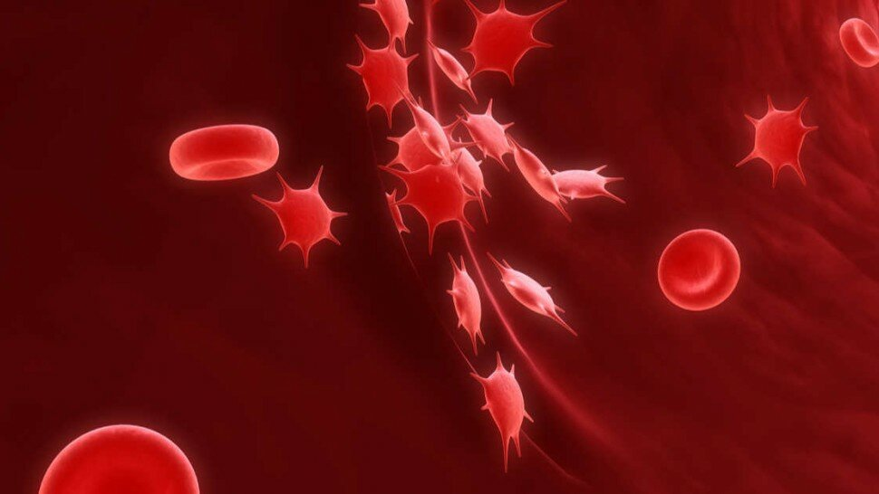

Plaquettes sanguines basses : causes et traitements
En biologie médicale, le faible nombre de plaquettes est nommé "thrombocytopénie" ou "thrombopénie". Il s'agit d'une anomalie de la quantité de thrombocytes (plaquettes) dans le sang.
La thrombocytopénie est donc une condition dans laquelle un patient a un faible nombre de plaquettes sanguines (déficit du sang en plaquettes ; < à 150000 plaquettes/mm3 de sang), qui touche aussi bien les enfants que les adultes. Les plaquettes (thrombocytes) sont des cellules sanguines incolores qui aident à la coagulation du sang. Les plaquettes arrêtent le saignement en s'agglomérant et en formant des bouchons dans les lésions des vaisseaux sanguins.
Une thrombocytopénie peut survenir à la suite d'un trouble de la moelle osseuse tel qu'une leucémie ou d'un problème du système immunitaire. Ou cela peut être un effet secondaire de la prise de certains médicaments. Bien que la thrombocytopénie peut être bénigne et provoquer peu de signes ou de symptômes, elle nécessite une prise en charge. Dans de rares cas, le nombre de plaquettes peut être si faible qu'une hémorragie interne dangereuse se produit, et des options de traitement sont disponibles.

Sommaire
- Introduction | Les plaquettes sanguines
- Plaquettes sanguines (thrombocytes) : à quoi servent les plaquettes dans le sang ?
- Numération des plaquettes : quel est le taux normal de plaquettes sanguines ?
- Comprendre la thrombopénie - Encyclopédie médicale - Vidéo
- Thrombopénie (Thrombocytopénie) : quelles sont les causes de la baisse de plaquettes ?
- Baisse des plaquettes et cancer
- Comment remonter les plaquettes basses ?
- Quand faire une transfusion de plaquettes ?
- Sources

Les plaquettes sanguines, également appelées « thrombocytes » (du grec « thrombôsis » qui signifie « caillot », de « thromboûn » : faire coaguler, et « kutos » : enveloppe), sont des composants sanguins incolores et non nucléés (petites cellules sans noyau) très importants, qui jouent un rôle majeur dans l'hémostase, phénomène intimement lié à la coagulation sanguine [1]. Elles ont également un rôle primordial dans l’immunité innée mais aussi adaptative.
Les thrombocytes, ou plaquettes, se forment lorsque des fragments cytoplasmiques de mégacaryocytes [2], qui sont de très grosses cellules multinucléées de la moelle osseuse, proches des sinusoïdes (structure vasculaire médullaire). Ces prolongements de cytoplasme vont traverser la paroi des sinusoïdes et se fragmenter dans la lumière de ces derniers sous la forme de plaquettes qui vont ainsi s'incorporer à la circulation sanguine.
Certaines preuves suggèrent que les plaquettes peuvent également être produites ou stockées dans les poumons, où les mégacaryocytes [3] sont fréquemment trouvés.
Plaquettes sanguines (thrombocytes) : à quoi servent les plaquettes dans le sang ?
Numération des plaquettes : quel est le taux normal de plaquettes sanguines ?
Thrombopénie (Thrombocytopénie) : quelles sont les causes de la baisse de plaquettes ?

La thrombopénie, appelée aussi « thrombocytopénie » et « hypoplaquettose », est une condition dans laquelle un patient a une faible numération plaquettaire. Cette pathologie peut affecter autant les enfants que les adultes.
Quelles sont les conséquences d'un manque de plaquettes ?
De façon générale, « la thrombocytopénie est caractérisée par un faible nombre de plaquettes (thrombocytes) dans le sang, ce qui augmente le risque hémorragique.
Le manque de plaquettes se manifeste différemment selon la gravité de la thrombopénie : ecchymoses ou «bleus» au moindre coup, saignement des gencives lors du brossage des dents, règles anormalement abondantes et prolongées, sang dans les selles voire hémorragie cérébrale ou méningée.
Quelles sont les causes d'un manque de plaquettes ?
Les deux grandes causes essentielles d'une thrombocytopénie (taux de plaquettes bas) sont les causes périphériques (destruction, consommation et hypersplénisme) ou l'insuffisance médullaire (cause centrale) [12].
Destruction excessive des plaquettes
Les raisons sont assez variées :
- Mécanisme immuno-allergique : les médicaments tels la pénicilline, la quinine ou la quinidine voire l'héparine peuvent être responsables d'une thrombopénie chez certaines personnes prédisposées ;
- Mécanisme auto-immun (fabrication d'anticorps anti-plaquettes qui provoquent leur destruction) primaire (purpura thrombopénique autoimmun idiopathique ou PTI) ou secondaire (Lupus Erythémateux Disséminé, hémopathies lymphoïdes, etc.)
- Virus (Infections virales) : rougeole, rubéole, mononucléose infectieuse, etc.
Consommation
- Coagulation Intra-Vasculaire Disséminée (CIVD)
- Purpura Thrombotique Thrombocytopénique (PTT)
- Syndrome Hémolytique et Urémique (SHU)
Modification de la répartition plaquettaire
- Hypersplénisme (splénomégalie) ;
- Hémodilution (post-transfusions massives).
Diminution de la production (insuffisance médullaire)
- Mégaloblastose carentielle ;
- Myélodysplasie ;
- Hémopathies malignes ;
- Métastases médullaires ;
- Intoxication éthylique aigüe ;
- Chimiothérapie ;
- Myélofibrose (ransformation fibreuse de la moelle osseuse).
Quels sont les symptômes d'une thrombopénie ?
Les signes et symptômes de thrombocytopénie les plus courants peuvent inclure :
- un saignement superficiel (éruption de taches cutanées rouge (rougeâtres ou violettes) appelée « pétéchies » [13])
- des ecchymoses spontanées [14](« tache noire, jaunâtre, produite par l'épanchement du sang sous la peau. ») ou pour des traumatismes minimes ;
- un purpura [15] (lésion hémorragique de la peau ou des muqueuses) ;
- un saignement prolongé des coupures ;
- des saignements au niveau des muqueuses (gencives, nez, etc.) et notamment des saignements de nez à répétition ;
- du sang dans l'urine ou les selles (saignement du tractus gastro-intestinal [16], avec des symptômes de gastro ou non) ;
- des flux menstruels abondants ;
- une asthénie (souvent conséquence d'une anémie suite à des petites hémorragies digestives) ;
- une rate hypertrophiée (splénomégalie) [17].
Ces symptômes nécessitent d’aller en consultation pour un examen clinique chez un médecin généraliste, afin de définir les causes exactes et opter pour la meilleure prise en charge selon chaque patient. D’autre part, dans le cas d’un saignement qui ne s'arrête pas, il s’agit d’une urgence médicale.
Les causes d’une thrombocytopénie (baisse des plaquettes) sont liées à de multiples facteurs. Pour mémoire, la thrombocytopénie signifie qu’un patient à moins de 150 000 plaquettes par microlitre (μL) de sang en circulation. Étant donné que chaque plaquette ne vit qu'environ 10 jours, l’organisme renouvelle normalement l’approvisionnement en plaquettes en continu en produisant de nouvelles plaquettes dans la moelle osseuse.
Par ailleurs, la thrombocytopénie est rarement héréditaire (pathologie génétique). En effet, ce faible approvisionnement en plaquettes peut être causé par un certain nombre de traitements médicamenteux ou de conditions.
Quelle qu'en soit la cause, il est essentiel de rappeler que les plaquettes en circulation sont réduites par un ou plusieurs des processus, dont :
• La retenue des plaquettes dans la rate. La rate est un petit organe de la taille d’un poing situé juste en dessous de la cage thoracique sur le côté gauche de l’abdomen. Normalement, la rate lutte contre les infections et filtre les matières indésirables du sang. Une rate hypertrophiée peut héberger trop de plaquettes, ce qui diminue le nombre de plaquettes en circulation.
• La diminution de la production de plaquettes. Les plaquettes sont produites dans la moelle osseuse. Les facteurs qui peuvent diminuer la production de plaquettes sont nombreux et peuvent y être associés des causes d'augmentation de la dégradation des plaquettes.
Certaines conditions (grossesse, maladies auto-immunes, infections bactériennes sévères, etc.) peuvent amener le corps à épuiser ou à détruire les plaquettes plus rapidement qu'elles ne sont produites, entraînant une pénurie de plaquettes dans la circulation sanguine.
Des saignements internes dangereux peuvent survenir lorsque le nombre de plaquettes tombe en dessous de 10 G/L soit 10 000 plaquettes par microlitre (μL). Bien que la thrombocytopénie sévère [18] soit une pathologie rare, elle peut provoquer des saignements dans le cerveau, qui peuvent être mortels.
Comment remonter les plaquettes basses ?
Quand faire une transfusion de plaquettes ?
Sources
- « Comment le sang coagule-t-il ? » Par Joel L. Moake , MD, Baylor College of Medicine ; J. W. Cox Laboratory for Biomedical Engineering, Rice University. Dernière révision totale déc. 2018. https://www.msdmanuals.com/fr/accueil/troubles-du-sang/processus-de-coagulation/comment-le-sang-coagule-t-il
- « De macro à micro : l’histoire de la plaquette. » Med Sci (Paris). Volume 24, Number 5, Mai 2008. Page(s) 467 - 469. DOI : https://doi.org/10.1051/medsci/2008245467 ; https://www.medecinesciences.org/en/articles/medsci/full_html/2008/07/medsci2008245p467/medsci2008245p467.html
- « Megakaryocytes » Latest research and news. Nature. 2021. Springer Nature Limited. https://www.nature.com/subjects/megakaryocytes
- Réparer les vaisseaux. La bioingénierie au secours de notre système cardiovasculaire. INSERM. https://www.inserm.fr/information-en-sante/dossiers-information/reparer-vaisseaux
- « Que fait la moelle osseuse ? » Edition Myelodysplastic Syndromes Foundation, Inc. 2014. https://www.mds-foundation.org/wp-content/uploads/2019/05/Blood-Marrow-Booklet_French_Online_5.8.19.pdf
- « Nanostructure des fibres de fibrine. » Christelle Yeromonahos. 2011. HAL Id: tel-00639435 ; https://tel.archives-ouvertes.fr/tel-00639435/document
- « Angiogenèse et morphogenèse de l’arbre vasculaire : de la biologie cellulaire à la clinique. », Michael S. Pepper. m/s (médecine/sciences), 2000 ; 16 : 1378-86. http://www.ipubli.inserm.fr/bitstream/handle/10608/1593/MS_2000_12_1378.pdf?sequence=5&isAllowed=y
- « Numération plaquettaire (après une prise de sang). Synonymes: Comptage des thrombocytes. Nom officiel: Comptage des plaquettes. » American Association for Clinical Chemistry. http://www.labtestsonline.fr/tests/plateletcount.html?tab=3
- Lecture critique de l'hémogramme: Valeurs seuils à reconnaître comme probablement pathologiques et principales variations non pathologiques. ANAES. Septembre 1997.https://www.has-sante.fr/upload/docs/application/pdf/Hemogram.pdf
- « Thrombocytose réactive (thrombocytose secondaire). » Par Jane Liesveld , MD, James P. Wilmot Cancer Institute, University of Rochester Medical Center. Dernière révision totale févr. 2019. https://www.msdmanuals.com/fr/professional/h%C3%A9matologie-et-oncologie/syndromes-my%C3%A9loprolif%C3%A9ratifs/thrombocytose-r%C3%A9active-thrombocytose-secondaire
- « Présentation de la thrombocytopénie. » Par David J. Kuter , MD, DPhil, Harvard Medical School|Massachusetts General Hospital. Dernière révision totale juil. 2019. https://www.msdmanuals.com/fr/accueil/troubles-du-sang/maladies-des-plaquettes/pr%C3%A9sentation-de-la-thrombocytop%C3%A9nie#:~:text=Une%20thrombocytop%C3%A9nie%20se%20produit%20lorsque,saignements%20cutan%C3%A9s%20et%20des%20ecchymoses.
-
Conduite à tenir devant une thrombopénie. Professeur Jean-Jacques SOTTO. Avril 2005
http://www-sante.ujf-grenoble.fr/SANTE/corpus/disciplines/hemato/hemacell/335/leconimprim.pdf
- « Pétéchie ». Définition Wikipédia. https://fr.wikipedia.org/wiki/P%C3%A9t%C3%A9chie
- « Ecchymose. » Définition. Dictionnaire Le Robert. https://dictionnaire.lerobert.com/definition/ecchymose
- « Purpura chez l’enfant. Diagnostiquer un purpura et planifier la prise en charge. » Campus de Pédiatrie - Collège National des Pédiatres Universitaires (CNPU). http://campus.cerimes.fr/media/campus/deploiement/pediatrie/enseignement/purpura_enfant/site/html/1.html
- « Sang dans les selles : quelles sont les causes ? Est-il dangereux d'avoir du sang dans les selles ? ». Le Guide Santé. Actualités Médecine. 14 janv. 2021.
- « Splénomégalie ». Par Harry S. Jacob , MD, DHC, University of Minnesota Medical School. Dernière révision totale janv. 2020. https://www.msdmanuals.com/fr/accueil/troubles-du-sang/maladies-de-la-rate/spl%C3%A9nom%C3%A9galie
- « La thrombopénie aux urgences. » O. Lambotte. Société Française de Médecine d'Urgence (SFMU). https://www.sfmu.org/upload/70_formation/02_eformation/02_congres/Urgences/urgences2011/donnees/pdf/066_lambotte.pdf
- Transfusions de Plaquettes. Pr M. Michallet. Service d’Hématologie du Centre Hospitalo-Universitaire Lyon Sud. http://www.sfvtt.org/wp-content/uploads/2017/05/1-MICHALLET_Mauricette_20161123_1600_Salle_St_Clair_1_-_Niveau_2.pdf
- « Platelet transfusions: trigger, dose, benefits, and risks. » Medical Reports. F1000 Med Rep. 2010; 2: 5. 2010 Jan 27. doi: 10.3410/M2-5. https://www.ncbi.nlm.nih.gov/pmc/articles/PMC2874899/ ; https://facultyopinions.com/prime/reports/m/2/5/
- Les aliments anti-cancer : régime et conseils. https://www.le-guide-sante.org/actualites/nutrition/aliments-anti-cancer-regime-conseils